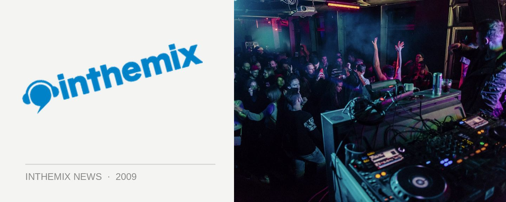

Ministry hit the road with The Annual 2010
The 2010 edition of Ministry of Sound’s massive selling The Annual compilation series will his the shelves at the end of this month, mixed by stalwarts John Course and Goodwill as well as some fresh blood in the form of Sony inthemix50 high–rankers The Aston Shuffle, so it’s no surprise the DJs in question will be hitting clubs around the country to help launch the release.
So what to expect from this year’s Annual? In the past it has set the trend for the big–room sounds dominating our clubs over the summer, and we don’t expect things to be any different with the 2010 installment.
John Course’s mix comes loaded with crowd pleasers from MSTRKRFT, Freemasons, Ian Carey and Bob Sinclar, the Aston Shuffle boys steer things in an wonky indie-dance direction with the likes of The Bloody Beetroots, Steve Aoki Crookers, Art vs Science and Bag Raiders, while Goodwill drives it home with an edgy big–room approach, featuring tunes from Mark Knight & Funkagenda, Sebastian Ingrosso, Cirez D, Dave Spoon, Deadmau5 and more.
The Annual 2010 is out 31st October through Ministry of Sound and Universal, catch the crew on the road at the following shows:
Friday30 Oct – Gladstone, Gladstone Hotel(Goodwill)
Friday30 Oct –Erina, Woodport Inn (Aston Shuffle)
Saturday 31 Oct –Sydney, Arthouse (Goodwill, Aston Shuffle, John Course)
Saturday 7 Nov – Coffs Harbour, Plantation (The Aston Shuffle)
Saturday 7 Nov – Gold Coast, Platinum (Goodwill, John Course)
Friday13 Nov – Cairns, TBC (Aston Shuffle, John Course)
Saturday 14 Nov –Traralgon,Kay St(Aston Shuffle, John Course)
Saturday 4 Nov – Byron Bay, Liquid(Goodwill)
Friday20 Nov – Maitland, The Brewery (The Aston Shuffle)
Saturday 21 Nov – Brisbane, Family(Aston Shuffle, John Course)
Friday27 Nov – Albury, Roi Bar (John Course)
Friday27–Nov Melbourne, TBC (Goodwill, Aston Shuffle)
Saturday 28 Nov – Adelaide, HQ (Aston Shuffle, John Course)
Saturday 28 Nov – Toowoomba, Toombas (Goodwill)
Friday4 Dec – Rouse Hill, Mean Fiddler (Goodwill)
Friday4 Dec – Launceston, New York (Aston Shuffle, John Course)
Saturday 5 Dec – Burnie, Sirrocco’s (Goodwill)
Thursday 10 Dec – Geraldton, The Nitey (Goodwill)
Friday11 Dec – Perth, Capitol (Goodwill, Aston Shuffle, John Course)
Saturday 12 Dec – Newcastle, King Street (Goodwill, John Course)
Saturday 12 Dec – Canberra, Academy (The Aston Shuffle)
Friday18 Dec – Mackay, Main Street (John Course)
Friday18 Dec – Hobart, Syrup (Goodwill, Aston Shuffle)
Saturday 19 Dec – Darwin, Discovery (Goodwill, John Course)
Thurs 24 Dec – Geelong, Club4Play (Goodwill, John Course)
Sunday 27 Dec – Port Macquarie, Beach Hotel (John Course)